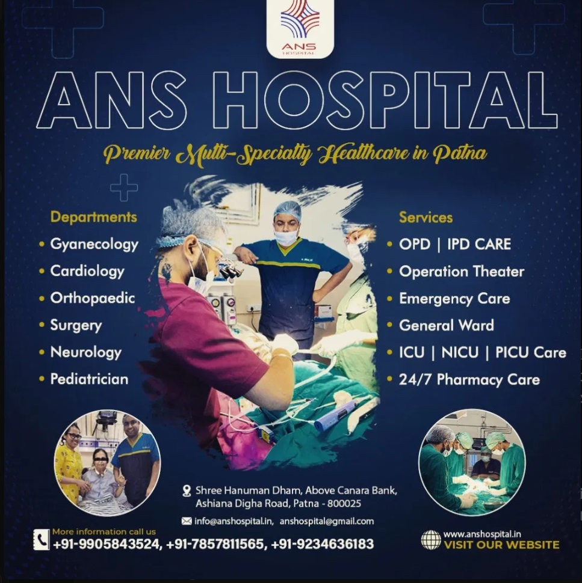

High Quality Clinic
Modern care environments built for safety, comfort, and practical access.
Premier Multi-Specialty Healthcare in Patna
Empowering Health, Enriching Lives: Your Trusted Partner in Exceptional Care

Painless Delivery FacilityAbout ANS Multi-Speciality Centre
Welcome to ANS Multi-Speciality Centre, a leading multi-speciality hospital in Patna, Bihar, renowned for its exceptional team of urologists, gynaecologists, neurologists and surgeons.
Modern care environments built for safety, comfort, and practical access.
Specialist-led treatment across critical, surgical, and family health needs.
Diagnostics, monitoring, and treatment plans shaped around each patient.
Attentive hospital teams focused on responsive, respectful care.
Departments
Adult health, chronic illness, fever, and preventive consultation.
Children's healthcare with family-centered attention and follow-up.
General surgical consultation, OT planning, and recovery support.
Women's health, maternity care, and painless delivery support.
Joint, bone, trauma, and mobility-focused treatment.
Heart care, monitoring, and emergency cardiac support.
Headache, seizure, weakness, and nerve-related care.
Vision concerns, screening, and eye consultation support.
Skin, hair, and allergy-focused evaluation and care.
Ear, nose, throat, sinus, and airway consultation.
Services and Facilities
Support for cardiac distress, trauma, respiratory issues, and urgent conditions.
Modern equipment and highly qualified critical care staff.
State-of-the-art surgical care with patient-centered processes.
A signature service designed for safer, calmer maternity experiences.
Personalized outpatient and inpatient treatment support across specialties.
Wide medication availability and prompt prescription support through the day.
Testing and imaging support to guide treatment decisions with clarity.
Comfortable accommodation and round-the-clock monitoring for admitted patients.
Recovery support for pain, movement, and post-procedure rehabilitation.
Rapid patient movement and emergency coordination when timing matters most.
Monitored renal care with attentive patient support and follow-up.
Reference-led support for elderly care, patient care, and post-surgery recovery.
Doctors and Team
General Surgery
Focused surgical consultation, operation planning, and recovery-centered care.
Multi-Specialty Care
Patient-reviewed care with emphasis on confidence, clarity, and follow-up.
Gynecology and Maternity
Women's health, maternity support, and painless delivery coordination.
Cardiology
Heart care, monitoring, and urgent cardiac symptom evaluation.
Pediatrics
Child health, family guidance, and acute illness care.
ICU, NICU and PICU
Round-the-clock monitoring and coordinated critical care response.
Patient Voices
"Well qualified, experienced team of doctors. Patient care is top priority. Helpful and accommodating staff."
"Very good condition of hospital with great care of patients."
"Great multispeciality hospital with a pocket-friendly range, and a family environment."
Community Care
ANS Hospital's care story reflects practical service during demanding public health moments, with emergency readiness and attentive staff support.
Recent social content highlights care beyond the ward, including elderly support, ICU care at home, newborn and mother care, and post-surgery recovery support.
Visit ANS Hospital
Easy to reach from Ashiana Digha Road, with round-the-clock emergency access and hospital support.
info@anshospital.in | anshospital@gmail.com
Request AppointmentShree Hanuman Dham, Above Canara Bank, Ashiana Digha Road, Patna - 800025
Book Appointment